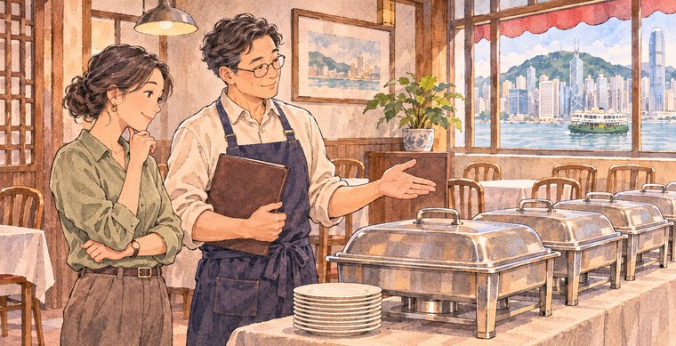

HSP-23 · 香港 · 15分钟 · 服务流程顺序 · 自助餐取餐区布局 · 顾客任务设计
菜品摆得好看，一餐就好搭配吗？

菜品陈列是服务旅程的一部分
服务设计研究把顾客的行动顺序作为设计的起点，而不是认为把东西摆得好看就够了。食品安全指南另有要求：要管控食品的存放、供应和污染风险。下文的餐厅、布局和观察记录均为原创虚构，并非对真实自助餐的研究发现。
课堂决策
你负责管理香港一家餐厅规模不大的午间自助餐。热菜仍供应九道，按菜系分为三组，每组各有一道主食、一道蛋白质菜品和一道蔬菜菜品。顾客可以自由搭配。这里要决定的不是该给什么营养建议，也不是该撤掉哪道菜，而是如何摆放同样的菜品供顾客取用。
A保留三个按菜系划分的取餐台，每个菜系的三道菜摆在一起。B把同样的菜按它们在一餐中的角色分组：一个台摆三道主食，一个台摆三道蛋白质菜品，另一个台摆三道蔬菜菜品。两种布局都逐道清楚标明菜名，准确提供配料和过敏原信息，如实介绍菜品的文化背景，并由受过培训的员工提供协助。顾客可以先看完所有菜品再取餐，也可以自由折返。两种布局都不要求顾客按指定方式搭配。
在这个虚构情境中，两套备选布局都已就无障碍通行、动线、食品存放设备和卫生要求做过检查。专用取餐用具、防止交叉接触的措施、补餐安排和食品安全操作都保持不变，不能为了方便而牺牲任何一项管控措施。人员配置、价格、供应量和营业时间也一样。在A中，每道菜都容易看见和辨认。现有服务安全可用；现在要选的是如何改进，而不是借机拖延必要的整改。
经理有经费在一轮供餐中试行任一布局，使用现有的可移动设备和员工。两种方案的布置和恢复原状都能用同一笔已分配的资源完成。永久改动尚未获批。A保留了各菜系菜品组合的完整性；B可能方便顾客比较一餐中的不同组成部分，却会把熟悉的搭配拆开。你还没有能比较两种布局实际效果的证据。
同样九道菜，两种摆法| 取餐台 | A：按菜系分组 | B：按餐食角色分组 |
|---|
| 第一 | 菜系1：主食、蛋白质菜品、蔬菜菜品 | 三道主食 |
| 第二 | 菜系2：主食、蛋白质菜品、蔬菜菜品 | 三道蛋白质菜品 |
| 第三 | 菜系3：主食、蛋白质菜品、蔬菜菜品 | 三道蔬菜菜品 |
这里只示意如何分组，不是按实测尺寸绘制的平面图。两种布局都保留全部九道菜和必须提供的信息。
你的决策这次有经费的试行，你会选按菜系分组的A，还是按餐食角色分组的B？说说你最想照顾顾客搭配一餐时的哪项任务，以及哪一项观察结果会让你改变选择。
第二轮 · 多了一项资料
试行前，在采用A、客流较少的一轮供餐中，二十位成年顾客同意接受观察。十二位先在不同取餐台比较蛋白质菜品，选定一道后，再回到先前经过的取餐台取主食或蔬菜，配齐第一盘。他们都能准确辨认自己选的菜，并表示折返是为了配出自己想要的组合，而不是因为缺少标签。五位在同一个菜系的取餐台配好一盘，没有折返。三位混搭不同菜系，也没有回到先前经过的取餐台。
二十位顾客都取到了自己想要的食物。没人被催促，也没人被指定要搭配出什么样的一餐。观察只记录第一盘怎么搭配，不涉及添餐，也不记录节省的时间、满意度评分、消费金额或食物浪费。这些自愿参加的顾客并不是按代表全体顾客的要求选出的，B也还没有试过。记录反映的是不同的搭配方式，而不是一条唯一正确的取餐路线。
你可以按计划试行B，让顾客先浏览全部菜品，并用清楚的分类标题标明各组在一餐中的角色，同时保留每道菜的菜系介绍和配料信息。要保持通行安全，继续提供员工协助。未经单独的安全评估，不要在多处重复摆放同一道菜，也不要把菜品移离规定使用的存放设备。你也可以用这次机会试行A的菜单预览指引，让顾客在动手取餐前看到完整菜单。两种做法都能在有经费的试行轮次内完成，目前都没有证据表明哪一种更好。
你的决策现在你会试行B，还是先改进A的菜单预览？请说明你的试行针对观察到的哪项搭配问题、你会测量什么，以及为什么不能仅凭折返减少就断定用餐体验更好。
找到菜品只是任务的一部分
十二位折返的顾客占这小组观察对象的12 ÷ 20 = 60%。这说明有些顾客会跨菜系搭配自己想要的一餐，却不代表失败率是60%：每个人都取到了自己想要的食物，折返可能是个人偏好，而不是问题。
关键是行动顺序：先比较蛋白质菜品，选定一道，再搭配其他菜品。菜品标识清楚，解决了找菜的问题，但不一定让搭配更方便。那五位只在一个菜系内取餐的顾客，他们的取餐过程也值得关注。不要只为一个小规模便利样本中的多数人重新设计布局。
围绕取餐过程提出假设，不要套用通用的布局规则
B把同一餐食角色的备选菜品摆在一起，值得用来检验它是否方便那些先比较蛋白质菜品的顾客。但它也会把另一些顾客想搭配着吃的菜分开。A保留了这些熟悉的组合；让顾客先看全菜单，可能方便他们在取餐前规划一盘跨菜系的搭配。两种摆法都不是在所有情况下更好，现有证据也无法单独识别布局带来的因果影响。
画出顾客自主采取的行动，包括先浏览、询问配料、挑选、取餐和折返。然后实地走一遍顾客的取餐路线和员工的补餐路线。不要把少去几个取餐台等同于走得更短：案例没有提供尺寸或行走时间。保留顾客自行折返的选择。
检验用餐体验，不催促顾客
记录顾客能否配出自己想要的组合、在哪里掉头、为什么折返，以及是否求助。可以简短问问他们取餐是否方便、过程是否愉快，由顾客自愿回答，不要只问速度。全程检查拥堵、无障碍通行、顾客对配料信息的理解、食品存放和补餐情况。如果管控效果下降，或无障碍通行状况变差，就停止试行。
后续研究应纳入不同的餐食搭配偏好和无障碍需求，取得适当同意，并尽量少收集数据。要在相近的供餐条件下比较，记录菜单、客流量和人员配置的差异。客流较少的一轮供餐既不是服务处理能力测试，也不能给出B带来多少改善的因果估计。更正式的比较需要适当的研究设计，不能直接把不同午餐时段的顾客当成同一类人来比较。
调整摆法，不能放松约束
食品安全和准确的过敏原信息是前提，不是可以取舍的选项。餐食角色的分类标题不能代替单道菜的标识，也不能暗示该组菜品适合所有饮食需求。继续逐道提供信息，由受过培训的员工提供协助，并采取防止交叉接触的措施。不要根据菜系名称或图片推断过敏原。
建议试行B有其道理，因为它针对的是已经观察到的搭配顺序。如果更看重保留同一菜系的完整搭配、避免不必要的走动，建议改进A的菜单预览也有道理。请说清楚，什么观察结果会支持你保留、调整或撤回试行的安排。
教师说明
0–4分钟：投票并画出顾客的取餐旅程。4–8分钟：公布二十位顾客的观察记录，区分找到某道菜和搭配好一盘菜。8–12分钟：提出一个范围明确的试行方案，说明要观察什么、何时停止。12–15分钟：比较跨菜系搭配的顾客与只选一个菜系的顾客各自的体验。
不要声称B已经减少了走动、排队、浪费或不满。十二位顾客折返是观察到的行为，不是服务缺陷，也不能据此推断总体比例。案例虽然固定了菜品范围，却不是照搬从目录中挑选商品的案例：这里起作用的是顾客搭配互补菜品时在实体空间中的行动顺序。它也不是关于顾客到场后的导向寻路，或如何催快翻台。无论怎么回答，都要保障安全、无障碍和顾客自主选择。
第二轮
试行前，在采用A、客流较少的一轮供餐中，二十位成年顾客同意接受观察。十二位先在不同取餐台比较蛋白质菜品，选定一道后，再回到先前经过的取餐台取主食或蔬菜，配齐第一盘。他们都能准确辨认自己选的菜，并表示折返是为了配出自己想要的组合，而不是因为缺少标签。五位在同一个菜系的取餐台配好一盘，没有折返。三位混搭不同菜系，也没有回到先前经过的取餐台。
二十位顾客都取到了自己想要的食物。没人被催促，也没人被指定要搭配出什么样的一餐。观察只记录第一盘怎么搭配，不涉及添餐，也不记录节省的时间、满意度评分、消费金额或食物浪费。这些自愿参加的顾客并不是按代表全体顾客的要求选出的，B也还没有试过。记录反映的是不同的搭配方式，而不是一条唯一正确的取餐路线。
你可以按计划试行B，让顾客先浏览全部菜品，并用清楚的分类标题标明各组在一餐中的角色，同时保留每道菜的菜系介绍和配料信息。要保持通行安全，继续提供员工协助。未经单独的安全评估，不要在多处重复摆放同一道菜，也不要把菜品移离规定使用的存放设备。你也可以用这次机会试行A的菜单预览指引，让顾客在动手取餐前看到完整菜单。两种做法都能在有经费的试行轮次内完成，目前都没有证据表明哪一种更好。
你的决策现在你会试行B，还是先改进A的菜单预览？请说明你的试行针对观察到的哪项搭配问题、你会测量什么，以及为什么不能仅凭折返减少就断定用餐体验更好。